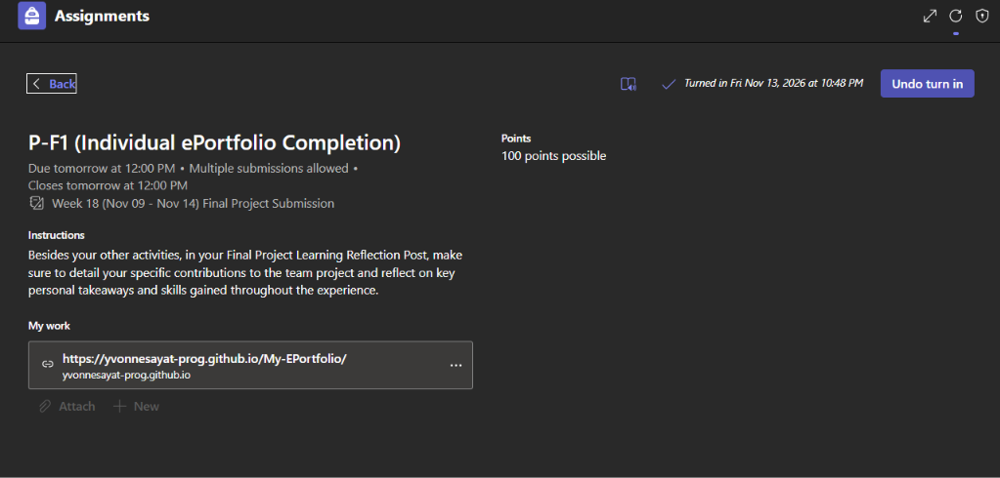

This activity presents my individual learning reflection about my contributions to the ByteGuard group project. It discusses my experience working on the Google Colab notebook, the technical skills I gained, and the lessons I learned throughout the development of our RAG-based chatbot.
Submitted Outputs
Microsoft Teams Submission Screenshot

Project Experience
Being part of ByteGuard gave me the opportunity to experience the development of a Retrieval-Augmented Generation (RAG) chatbot. Throughout the project, I gained a better understanding of how the different stages of RAG development work together, from dataset preparation and text chunking to experimentation, optimization, and chatbot evaluation.
The project also allowed me to apply the concepts discussed in our lectures and laboratory activities to an actual group project. It helped me understand how important implementation, testing, and proper documentation are when developing a functional chatbot.
My Individual Contributions
As a member of ByteGuard, one of my main contributions was working on the Google Colab notebook used in our project. I was responsible for preparing and working on the notebook where the RAG process and related experiments were implemented.
I also worked on organizing the notebook cells and code to make the procedures easier to follow. This involved preparing the code sections and making sure the notebook was properly arranged for our project's development and testing activities.
Through this task, I was able to apply my knowledge of Python and Google Colab while gaining more experience in working with the technical parts of a RAG-based chatbot. My contribution helped support the group's implementation and experimentation process.
Key Personal Takeaways and Skills Gained
Throughout this experience, I developed several skills that I can apply to future academic and professional projects:
- Google Colab Development: Gained practical experience in creating, editing, and organizing a notebook for our RAG-based chatbot project.
- Python Programming: Improved my understanding of writing and working with Python code in Google Colab.
- RAG Development: Learned more about dataset preparation, chunking, information retrieval, and chatbot development.
- Experimentation: Gained experience in working with notebook procedures and testing different configurations.
- Problem-Solving: Improved my ability to review code and work through technical tasks during project development.
- Teamwork and Collaboration: Learned the importance of sharing responsibilities and contributing to different parts of a group project.
Overall Reflection
Overall, the ByteGuard project was a valuable learning experience because it allowed me to apply what I learned in class to an actual RAG-based chatbot project. Working on the Google Colab notebook helped me improve my technical skills and understand more about the development process.
I also realized that being responsible for a specific part of a group project requires patience, effort, and attention to detail. Working on the notebook gave me an opportunity to contribute directly to the technical development of our project instead of focusing only on documentation and file organization.
Moving forward, I hope to use the knowledge and skills I gained from this experience in my future academic activities, research, and personal growth.